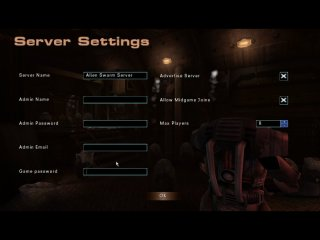

This tutorial will try to describe shortly how to install Alien Swarm for Linux. It will also give information on how to run a dedicated server from bash, making sure it restarts if it crashes and which ports you need to open on your firewall to make it run properly.
Installing Alien Swarm
Make sure you have Unreal Tournament 2004 installed. Doesn't matter where. (It resides in /opt/ut2004 for me.)
Then make sure you download and install patch 3204 .
If you downloaded the non-umod file, then unzip the contens of the zip package to the /ut2004/ directory so Alien Swarm will be in it's on directory, /ut2004/AlienSwarm and run the executable script which is described a little more down below.
If you downloaded the umod version of the file, unzip the contents to a temporary directory and copy the AlienSwarm_v1.ut4mod and as-linux-installer.sh files to /ut2004/System/ then open a terminal and type sh ./as-linux-installer.sh in the directory /ut2004/System/ and the installer will unpack Alien Swarm.
You can also download a graphical installer for Linux which is made by Loki Installers for Linux Gamers. To run it, just type sh alien.swarm_1.0-english.run.
(Note: This installer comes with a different executable, you need to type ./alienswarm instead of the command below to run AS.)
To run Alien Swarm, execute the Swarm Linux executable by typing sh ./Alien-Swarm-Linux when you are in the /ut2004/System/ directory.
Opening server ports
The default ports are:
| Port | Description |
|---|---|
| 7777 UDP/IP | Game Port |
| 7778 UDP/IP | Query Port |
| 7787 UDP/IP | GameSpy uplink |
| 28902 TCP/IP | Master Server uplink |
If you are using IPtables you can use these commands to open ports to your server(make sure you are root before you enter these commands.):
iptables -A INPUT -i eth0 -p udp -m multiport --dport 7777,7778,7787 -j ACCEPT
iptables -A INPUT -i eth0 -p tcp --dport 28902 -j ACCEPT
If you are using Shorewall can add these two lines to your /etc/shorewall/rules file:
ACCEPT net fw udp 7777,7778,7787,7788
ACCEPT net fw tcp 28902
Note: You don't need to open 28902 and 7787 if you don't intend to run an advertised server. If you want to run the webadmin client, you should open another port for this, for example, tcp port 8888. Don't forget to add this port number to your AlienSwarm.ini file.
Starting an Alien Swarm Linux dedicated server from the command line
If you want to run a dedicated server without having to use the Graphical menus, you can use the following commands in a terminal.
To start a new campaign server use:
./ucc-bin server AOL-CampaignLobby.ut2?CampaignSlot=#?NewGame=Yes?SlotName=$ -mod=AlienSwarm
The hash (#) in the above command is a number between 0 and 11 and the dollar sign is the name for your slot.
To resume the previously played campaign game. Where hash (#) is the slotnumber of the game you want to restore:
./ucc-bin server AOL-CampaignLobby.ut2?CampaignSlot=#?NewGame=No -mod=AlienSwarm
If you just want to make the server play a single map, you can use:
./ucc-bin server map-name -mod=AlienSwarm
Note: The ucc-bin commands must be executed from the ut2004/System directory. If you prefer not to use an ordinary user for running your server you could use the tag -nohomedir after the start-up commands. This prevents directory creation in your Home directory. Alien Swarm will then use the settings it finds in /AlienSwarm/System/.
Using custom ini files
If you want to use custom ini files, for use with two or more servers on one machine, you can use the following command to point to these ini files.
./ucc-bin server map-name -ini=../AlienSwarm/System/AlienSwarm.ini -userini=../AlienSwarm/System/AlienSwarmUser.ini
Restart script
When an UT2004 server crashes, it doesn't restart by itself. So I will provide you with a little script that does this for you. To make the script follow these short steps:
- Open a terminal window and go to the /ut2004/AlienSwarm/ directory.
- Type touch start-service
- Type chmod +x start-service
- Then open start-service in a text editor and copy and paste the following text:
#!/bin/sh
GAMEPATH=/path/to/where/you/installed/ut2004/
while true
do
${GAMEPATH}./ucc-bin server AO-ReactorCore.ut2 -mod=AlienSwarm -nohomedir
echo "Server crashed on " >> ${GAMEPATH}/crash.log
echo `date +%Y-%m-%d_%H.%M` >> ${GAMEPATH}/crash.log
done - Change the
GAMEPATH=part to match where you installed ut2004 - Save this file and exit the editor program.
- Then type sh ./start-service to start the server.
You could edit the game type in this script to make it run a campaign server. Or you could let it restart as a single map game server, since people can always vote to start a new campaign, this game is stored in the last slot (slot 11). It gets overwriten when someone calls a vote to start a new campaign.
↑ topChanging server settings
There are two ways to change settings for your server:
- You use the menu that you can access in-game. Best use this for setting up a server quickly.
- You can edit ini files for more control.
First I'll explain about the server settings menu you can find in-game.
{kind=link}
Enlarged version of this screenshot.
When you access this menu (Host Multiplayer → Server settings) you get shown a few options. What you need to fill in here should also be pretty obvious (hopefully!) but I'll go through it anyway.
- Server name
- The name that will show up in the server browser
- Admin name
- Your name or nickname.
- Admin password
- The password that you enter to become administrator.
- Admin email
- The email adress you want to give out to people so they can send you emails about possible problems they may have with your server.
- Game password
- If you put a password in this field, people need to enter a password if they want to access your server. Leave blank, if you want to allow anyone to come in your server.
- Advertise server
- What this option does is basically make your server show up in the server browser.
- Allow midgame Joins
- Switch this on if you want people to be able to enter midgame. They cannot select a marine yet and have to spectate for as long as the round lasts.
- Max players
- The game defaults to 6 players max, though this can be increased to 8 if you have the bandwidth. We recommend games of 4–6 players for gameplay purposes, any more than that and it tends to get very crowded with a loss of teamwork.
AlienSwarm.ini
Now for the more advanced stuff. Tweaking your AlienSwarm.ini file. Either your home directory or (if you used the -nohomedir switch) the ut2004/System directory.
I will provide samples sections from AlienSwarm.ini here and describe what the settings do in each section.
[IpDrv.MasterServerUplink]
[IpDrv.MasterServerUplink]
DoUplink=True
UplinkToGamespy=True
SendStats=True
ServerBehindNAT=False
DoLANBroadcast=True
- DoUplink
- When this is set to true, your server will show up in the server browser.
- UplinkToGameSpy
- If you want your server to show on the gamespy server browsers, set this to true.
- SendStats
- This will send stats to a stats server, but Alien Swarm does not support this so it's currently useless.
- ServerBehindNAT
- Try setting this to true if your server is behind a NAT/MASQ router and people are having problems connecting to your server.
- DoLANBroadcast
- This makes the server show up under the LAN tab for other pc's on your lan if true.
[Engine.GameReplicationInfo]
[Engine.GameReplicationInfo]
ServerName=Alien Swarm Server
ShortName=AS Server
ServerRegion=0
AdminName=
AdminEmail=
MessageOfTheDay=
- ServerName
- Obviously, the name of the server as you want it to appear on the server browser.
- ShortName
- Still need to fill in.
- ServerRegion
- This is used by Gamespy servers to group servers according to the region servers are in.
- AdminName
- Your name that shows up in the server info window.
- AdminEmail
- Your email adress that people can use to send you emails about the possible problems they experience with your server.
- MessageOfTheDay
- You can put a short message here that shows when the game starts.
[UWeb.WebServer]
[UWeb.WebServer]
Applications[0]=xWebAdmin.UTServerAdmin
ApplicationPaths[0]=/ServerAdmin
Applications[1]=xWebAdmin.UTImageServer
ApplicationPaths[1]=/images
bEnabled=False
ListenPort=80
The only lines of interest underneath [UWeb.WebServer] are:
- bEnabled
- Setting it to true enabled the web admin server.
- ListenPort
- Set this to the port you opened earlier for the web admin to run on.
[AoPrototype.AoServerSettings]
[AoPrototype.AoServerSettings]
Difficulty=5
bAllowMidgameJoins=True
bWoundedMarinesSitOut=False
bRestartDedicatedIfAllPlayersLeave=True
bFairMarineRules=True
bHackNotify=True
VoteTimeout=120
VotePercentage=0.650000
bCameraPrediction=True
The part below it changes each time people in your server get different guns from the loadout screen. Changing stuff here is pretty pointless, since any change you make is undone as soon as someone puts something in one of their three slots.
- Difficulty
- This sets the difficulty of the current game. You can set a difficulty of 1 up to 10. More difficulty affects alien health and melee damage. The leader can change the difficulty and if marines have to wait one round after getting wounded in game.
- bAllowMidgameJoins
- If you set this to True (default) people can join your games when they are already in progress. They cannot join when it's set to false.
- bWoundedMarinesSitOut
- If this is set to true, marines have to wait one round to heal after getting wounded in the previous game.
- bRestartDedicatedIfAllPlayersLeave
- Setting this to true restarts the server after everyone leaves.
- bFairMarineRules
- Only allowed 1 marine each if there are 4 or more players.
- bHackNotify
- Setting this to true will notify players when a tech marine starts hacking, when the hack is at 50% and when the hack is complete.
- VoteTimeout
- This sets the amount of time in seconds that it takes for a vote to time out.
- VotePercentage
- This controls the amount of influence a vote has.
- bCameraPrediction
- This makes the server anticipate the camera panning of players, setting it to false will save bandwidth but will result in 'pop up' for the players in certain spots.
Additional notes
- You might experience problems with starting a dedicated server from the graphical menus, a listen server works fine though. We recommend that you use a terminal to start a dedicated server. (This is most likely an UT2004 bug and we are currently investigating the possible cause.)
- If you place a new custom map in AlienSwarm/Maps and start the server, it will export the map and try to start the
server or client. On the linux client when it exports the map and tries to start the game it will crash with an error saying
something like:
foo@foobar System $ sh ./Alien-Swarm-Linux
Exporting AO-{mapname}.....Successful!
WARNING: ALC_EXT_capture is subject to change!
_X11TransSocketOpen: socket() failed for local
_X11TransSocketOpenCOTSClient: Unable to open socket for local
_X11TransOpen: transport open failed for local/{your-hostname}:0
pause_audiodevice stubbed for 0x3
pause_audiodevice stubbed for 0x3
Couldn't set video mode: Could not create GL context
History:
Exiting due to error
This is possibly a Linux UT2004 bug because it doesn't happen for the windows version. Should it crash, just restart it again and it will start up as normal.
- The webadmin can be used, but it's not customized for Alien Swarm. You can still use it to say stuff to players in game, kick & ban players, restart the server,etc.
- If you get an error saying something like:
Failed to enter AlienSwarmStartup.ut2: Can't find file 'AlienSwarmStartup.ut2'
then you didn't patch ut2004 to version 3204. Version 3204 alters the way the ini files handles paths and Alien Swarm uses the new path handling. If you get this error, you need to delete AlienSwarm.ini, then patch and restart the mod. Then it should work as normal.
History:
Exiting due to error
- If you have a server that can use multiple IPs you can use the -multihome= switch in the ucc-bin command line to tell ucc which IP to use for this server. If you are looking for more information about how to run multiple servers on one machine, there is a detailed guide on unrealadmin.org
- In Alien Swarm v1, some additional ini files were used (AoServer.ini, AoCampaignGame.ini, AoBestScores.ini), however in 1.1 and above, all these settings were moved into the AlienSwarm.ini to support multiple servers on one machine.